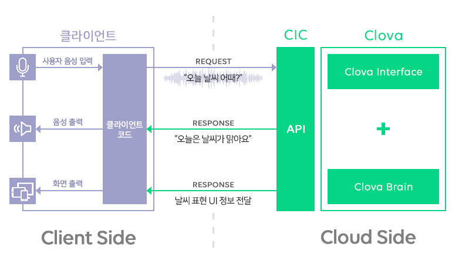
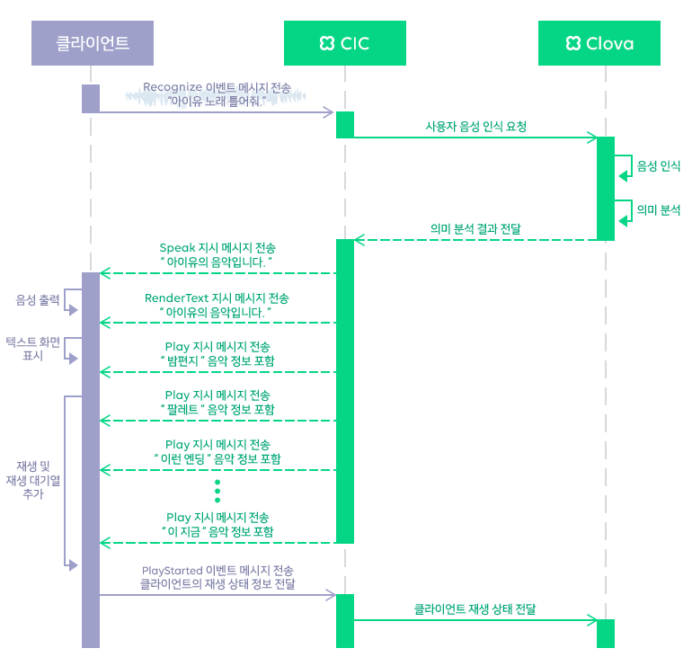

CIC 개요
이 문서는 Clova Interface Connect(이하 CIC)에 대해 자세히 설명합니다. 이 문서를 통해 CIC가 무엇이고 어떻게 동작하는지 파악할 수 있으며, CIC와 관련된 가이드나 레퍼런스를 제공합니다.
CIC란?
CIC는 인공 지능 비서 서비스를 제공하려는 PC/모바일용 앱, 모바일 또는 가전 기기 등의 클라이언트에게 Clova와 연동할 수 있는 인터페이스를 제공하는 플랫폼입니다. CIC가 제공하는 API를 통해 사용자의 요청을 Clova로 전달하며 Clova의 응답을 CIC를 통해 클라이언트에게 제공합니다.

CIC 동작 구조
클라이언트는 CIC API를 통해 사용자의 요청을 CIC로 전달하며 응답 결과를 CIC로부터 전달받습니다. CIC에 접속하기 위해 HTTP/2 프로토콜을 사용해야 하며, 음성 인식, 음성 출력, 음악 재생, 개인 일정 관리, 알람, 타이머 설정과 같은 기능을 CIC API를 통해 제공하고 있습니다.
CIC API를 통해 클라이언트와 CIC 사이에 다양한 커뮤니케이션이 발생합니다. 이때, 커뮤니케이션 방향에 따라 다음과 같은 유형의 메시지가 전달됩니다.
이벤트 메시지: 클라이언트에서 CIC로 전달하는 메시지입니다. 사용자 요청(음성 입력)을 전달하거나 클라이언트의 상태 값이 변경된 것을 알릴 때 이 메시지를 전송합니다.
지시 메시지: CIC가 클라이언트의 행동을 제어하도록 명세한 메시지입니다. 예를 들면, 앱에 특정 정보를 표시하거나 합성된 음성을 출력하도록 요청하는 메시지입니다. 이런 지시 메시지는 다음과 같은 상황에 전달됩니다.
- 사용자 요청에 대한 응답 메시지로서 주로 사용자의 음성이 인식된 후 그 의도를 클라이언트가 수행하도록 하기 위해 전달됩니다.
- 특정 조건에 의해 사용자의 요청 없이 CIC가 클라이언트로 지시 메시지를 먼저 보낼 수도 있습니다.
다음은 CIC와 클라이언트 사이의 메시지 송수신 동작 예를 나타낸 시퀀스 다이어그램입니다.

대화 모델
CIC가 제공하는 대화 모델을 이해하기 위해 다음 내용을 설명합니다.
간접 대화 구조
사용자와 Clova는 일련의 대화를 주고 받습니다. 일반적으로 사용자는 Clova에게 원하는 정보를 확인하거나 동작을 수행하도록 요청하고 Clova는 사용자에게 탐색한 정보나 동작 수행 결과를 응답으로 전달합니다. 이 대화를 위해 사용자와 Clova 사이에 중계자 역할을 하는 클라이언트와 CIC가 존재합니다.
특별한 사항이 없다면 사용자와 Clova 사이의 대화는 다음과 같이 간단히 수행될 수 있습니다.
- 사용자가 발화를 시작합니다.
- 클라이언트는 사용자의 음성을 녹음하고 이를 CIC에 전달합니다.
- 클라이언트는 CIC로부터 받은 결과를 사용자에게 음성으로 들려주거나 화면에 표시합니다.
하지만, 앞서 이야기했듯이 사용자와 Clova 사이에 클라이언트와 CIC가 있는 이런 간접 대화 구조는 다음과 같은 특징을 가집니다.
- 요청을 전달하거나 응답을 수신할 때 직접적인 대화보다 시간이 더 지연됩니다.
- 사용자가 새로운 주제의 대화(요청)를 시도할 때 즉각 대응하기 어렵습니다.
예를 들면, 사용자가 Clova에게 "오늘 날씨 어때?"라고 묻고 기다리다가 Clova가 이에 대한 응답을 보내주기 전이나 응답을 하고 있는 중에 "신나는 노래 들려줘"라고 이야기할 수도 있습니다. 이 경우 "오늘 날씨 어때?"에 대한 응답은 더 이상 사용자가 원하는 내용이 아닐 것입니다. 만약 이것이 직접적인 대화라면 응답을 쉽게 중지하거나 취소할 수 있겠지만 중계 방식의 대화라면 중계자인 클라이언트 선에서 상황 판단 및 그에 상응하는 동작을 수행해야 할 것입니다.
대화 ID와 클라이언트의 동작
간접 대화 구조의 이슈를 해결하기 위해 대화 ID라는 개념을 사용합니다. 대화 ID는 사용자의 요청을 식별하기 위해 사용자가 발화를 시작할 때마다 생성하는 ID입니다. 클라이언트는 CIC에 전달한 마지막 사용자 요청의 대화 ID를 기억해야하며, CIC로 사용자 요청을 전달할 때마다 마지막 대화 ID를 갱신해야 합니다.
CIC는 사용자 요청에 대한 응답으로 지시 메시지를 클라이언트에게 보내며, 이 지시 메시지에 사용자 요청 수신 시 받았던 대화 ID 정보를 포함시킵니다. 따라서, 대화 ID를 통해 CIC로부터 전달된 결과가 현재 사용자의 요청에 부합한 응답인지 확인할 수 있습니다. 클라이언트는 다음과 같이 동작을 수행해야 합니다.
- 사용자가 새로운 발화를 시작할 때마다 새로운 대화 ID를 생성합니다.
- SpeechRecognizer.Recognize 이벤트 메시지를 이용하여 사용자의 요청을 CIC로 전달합니다.
- 이때, 클라이언트는 기억하고 있는 마지막 대화 ID를 새로 생성한 대화 ID로 교체해야 합니다.
- 마지막 대화 ID가 교체되면 이전 대화 ID와 관련하여 클라이언트가 처리 중이거나 처리해야 할 지시 메시지를 모두 폐기해야 합니다.
- CIC가 요청 처리 결과를 지시 메시지로 보내면, 지시 메시지에 포함된 대화 ID와 클라이언트가 기억하고 있는 마지막 대화 ID를 비교합니다.
- 같을 경우 수신한 지시 메시지의 내용에 맞게 사용자에게 결과를 전달합니다.
- 다를 경우 수신한 지시 메시지를 폐기합니다.